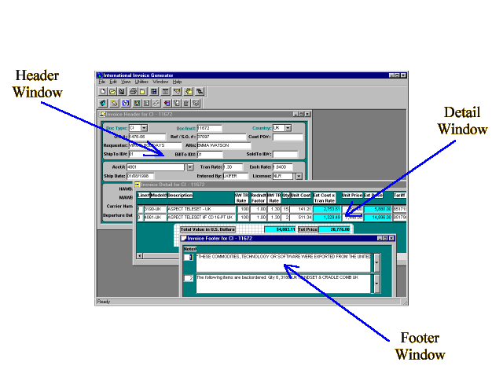

The intent of this tutorial is to familiarise the new user to the various functions of the International Invoice Generator (also refered to as The Generator or IIG). No attempt is being made to describe procedures for exporting items from the US. Any language or images refering to export procedures or regulations are intended as examples only for purposes of demonstrating the features of the IIG. All necessary knowledge of US Export Regulations should already be known by the user, or be acquired through the proper sources. It is also assumed that the user has a working knowledge of the Windows operating system.
The International Invoice Generator is a custom designed program used to create Commercial & Pro-Forma Invoices in Microsoft Word format for all of Aspect's International shipments. These invoices are used to clear our shipments through the Customs offices of the countries we export to. Commercial Invoices for shipments to our subsidiaries frequently double as billing invoices for our accounting dept.
The invoice is created in the Generator either by downloading information from the Oracle system or by entering data directly into the Generator by hand, or a combination of the two. The Generator was designed to be extremely flexible so the Export Coordinator creating the invoice will have a high degree of control over the final output.
All invoices have three main elements: HEADER, DETAIL & FOOTER. Each of these elements have a separate window for data to be entered and saved. Each invoice has a unique invoice number and the three elements creating a particular invoice are tied together by that unique number.
See below for sample screen of the Generator indicating the windows for all three elements:

Please make selection from below: